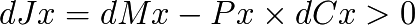

Principe de résonance psychologique. Les bulles sont une conséquence de l’émission monétaire asymétrique
L’émetteur de monnaie asymétrique a donc sa propre vision de la valeur, qui est potentiellement incompatible avec celle des autres membres de la zone économique.
Ce faisant, il aura donc tendance à privilégier ce qu’il croit être une valeur absolue, et donc à émettre des crédits concernant la production et la vente de cette valeur spécifique. Il en alimente donc le bénéfice pour lui-même (via l’intérêt) et pour le producteur par effet de résonance (bénéfice par survalorisation et vente), les perdants étant les derniers acheteurs de la valeur avant la chute inévitable.
Nous sommes donc dans le cadre de l’émission monétaire asymétrique sur un principe de résonance psychologique fondamental que nous pouvons résumer par :
« L’économie est en attente de visibilité sur la politique monétaire, laquelle attend une visibilité sur l’économie »
Principe à la base des phénomènes de bulles et de crises systémiques par construction, des systèmes monétaires qui ne comprennent pas le principe de relativité.

Évolution temporelle de pseudo « valeurs » par émission arbitraire de « monnaie dette »
Développement théorique
Supposons qu’une valeur spécifique dVs = Pf × dCf soit en croissance (dVs > 0). L’émetteur de crédits va alimenter la production et l’achat de cette valeur en nouveaux crédits dMf pour en tirer un bénéfice, en proportion de cette valeur, et selon donc, pour cette valeur spécifique :

Cette « croissance » atteint un maximum limité soit par le contrôle de la quantité globale d’expansion monétaire par les autorités, soit par la saturation du marché. À ce moment-là, la valeur commence à se stabiliser globalement, voire à chuter. La chute sera en rapport avec l’excès de monnaie investi dans le secteur, qui aura produit un excès de production non solvable.
Surgit alors un problème de remboursement des crédits alloués à l’émetteur, qui, ne pouvant se faire, devra faire l’objet d’une reconduction du crédit excessivement alloué, qui constitue donc in fine une création monétaire durable dans le temps. Il s’agit d’un avantage monstrueusement asymétrique du producteur de cette valeur spécifique par rapport aux autres acteurs économiques qui bien qu’ayant identifié des valeurs à produire et échanger, sont privés unilatéralement de leur part de l’outil monétaire nécessaire.
Il faut bien comprendre dans le champ de valeur l’endettement des « derniers acheteurs », suite à l’explosion de la bulle, qui est dû à la création asymétrique et arbitraire de crédits. Celle-ci n’est pas allouée pour résoudre le problème des trois producteurs et la circularité de l’échange de valeur au sein de l’économie, mais uniquement sur la base de « valeurs en expansion », créant donc une résonance intrinsèque. Voyons l’évolution de la bulle dans le champ de valeur sur un exemple.
a) Une valeur monétisée est identifiée par l’émetteur de crédits arbitraires muni de fonds propres
b) L’émetteur de crédits arbitraires alloue alors des lignes de crédits au producteur de cette valeur, ainsi qu’aux acheteurs, ce faisant il crée une distorsion du champ en sa faveur, crédits et intérêts lui étant « dûs ». Initialement La valeur « monte » brusquement sous l’effet de l’injection locale de crédits.

a) Fonds propres initiaux (Luc Fievet TRM 2.0)
c) L’émetteur de crédits arbitraires cesse son injection, soit parce qu’il crédite une autre valeur de son choix, soit parce qu’il arrive en « haut de bilan », c’est-à-dire qu’il est à maximum d’émission de crédits possible (il a atteint son effet de levier maximum permis) ce qui est le cas des grandes crises systémiques (l’effet de levier est globalement atteint par l’ensemble du système, et on ne peut plus légalement créer de monnaie supplémentaire via cet avantage). À ce moment là la force de remboursement de l’intérêt et des crédits fait « exploser la bulle » qui ne peut plus se nourrir de l’injection de nouveaux crédits.
d) Il reste en fin de « cycle » un émetteur de crédits arbitraires qui a « aspiré » l’essentiel de la monnaie préexistante du fait du paiement des intérêts, et a donc réalisé un bénéfice, et un secteur de production de valeur où non seulement les derniers acheteurs se retrouvent avec une dette supérieure à la valeur de ce qu’ils ont acheté, mais où le producteur lui même se trouve chargé d’une dette produite mécaniquement par un remboursement total dû (capital + intérêts) supérieur à la croissance locale de la monnaie.
{kind=link}
b) L’émetteur de crédits par effet de levier crée de la monnaie supplémentaire qui alimente un producteur arbitrairement sélectionné. (Luc Fievet TRM 2.0)
Ce phénomène local est bien évidemment exactement le même au niveau global, la fin de cycle étant à ce niveau là le moment où l’ensemble du secteur bancaire a émis tout le crédit possible atteignant son effet de levier maximum, et où donc même en identifiant d’éventuelles nouvelles valeurs à vampiriser il n’a plus légalement le droit de le faire. C’est alors l’ensemble total de la zone économique qui se trouve piégée devant une force de remboursement supérieure au taux de croissance global de la monnaie.

c) Force de remboursement du crédit arbitrairement émis et alloué (Luc Fievet TRM 2.0)
Ainsi quelle que soit la valeur créée dans l’économie d’un système monétaire centralisé, le bénéfice revient toujours aux émetteurs asymétriques de crédits avec un risque nul, puisque même en cas de faillite des producteurs, et de non-remboursement des crédits, le système doit renflouer les émetteurs de crédits au risque de voir toute l’économie totalement paralysée.
Ce modèle asymétrique s’avère être un système où, à risque minimum on obtient le bénéfice maximum pour le créateur de monnaie, et à risque maximum on n’obtient qu’un bénéfice minimum (et le plus souvent une faillite forcée) pour les producteurs
Ceci est fondamentalement différent de l’investissement avec de la monnaie préalablement accumulée, qui constitue aussi un afflux de monnaie sur un secteur déterminé, mais sans assurance d’intérêt fixe, sans jouer sur la masse monétaire, donc sans être réalisé au détriment du reste de l’économie, et avec un risque véritable de perte sans que l’économie en soit globalement affectée (de la monnaie accumulée puis investie n’est la dette de personne).

Faillite forcée par assèchement monétaire progressif, et captation de toute la valeur par le centre d’émission (Luc Fievet TRM 2.0)
Vérification expérimentale
Le raisonnement théorique peut se vérifier en étudiant les bulles globales pour lesquelles nous avons des mesures des masses monétaires globales contrôlées par le centre d’émission constitué par les Banques privées (effet de levier) et Centrales. Dans ce système monétaire asymétrique, les périodes où un début de concentration de flux monétaires est constaté, est sur-alimenté par une création de monnaie à résonance.
Pour voir cet effet sur des données expérimentales, nous allons calculer l’écart type sur une moyenne à 12 mois, de la croissance des masses monétaires M3 en Europe et États-Unis. L’écart type en mathématiques statistiques, représente les effets d’écart par rapport à la moyenne, ce qui permet de très bien visualiser un effet de résonance.
![E = \sqrt{\frac{1}{n}\sum^n_{k=1}{[M(k) - Moyenne]^2}}](_images/math/6e276993ac2ac3a6ff0870184bb8d60e02fb10e0.png)
Nous percevons alors très clairement que les expansions et les crises sont de purs effets de résonance monétaire, M3 € a subi des poussées de création monétaires très au dessus de sa moyenne lors des crises des années 2000 et 2008.
Et pour M3 US$, sur une période plus longue encore, nous obtenons des indications sur plus longue période où l’on voit la résonance des expansions monétaires avec les grandes crises « économiques », qui ne sont que l’effet du principe de résonance psychologique d’un système à création asymétrique de monnaie.
Pour M3 € nous obtenons alors ceci :
{kind=link}
Ecart type sur 12 mois de la croissance de M3 € 1998 - 2010
Il y a donc une accaparation de la monnaie créée arbitrairement sur des flux monétaires identifiés par les acteurs de ces expansions à résonance, au détriment de tout le reste de l’économie.
Non seulement le reste de l’économie est exclu de cette création monétaire par résonance, mais subira par effet retard une dévaluation de sa part de monnaie, quand cet afflux de nouvelle monnaie réinvestira les circuits économiques. Ainsi les acteurs du centre monétaire se partagent la monnaie nouvellement émise, puis bénéficient de l’avantage du premier acheteur au prix le plus bas. Quand ils prennent ensuite possession des valeurs économique restantes, l’inflation des prix suit cet afflux de monnaie, et les autres acteurs économiques sont donc floués doublement, d’abord par la création monétaire centrale dont ils sont exclus, puis dans un deuxième temps par l’inflation provoquée par l’achat progressif des biens économiques avec cette monnaie.
Le centre d’émission joue donc, par construction, contre l’intérêt de la somme des autres acteurs économiques.

Ecart type sur 12 mois de la croissance de M3 $ 1958 - 2010